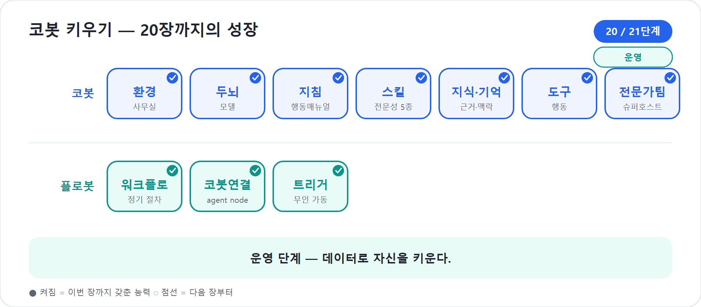

20장. Monitor — 배포 후 추적
코봇을 게시하고 동료에게 나눠준 순간, 일이 끝났다고 느끼기 쉽다. 그러나 그때가 진짜 시작이다. 사람을 부서에 배치한 뒤 근무를 지켜보며 코칭하듯, 코봇도 내보낸 뒤 데이터로 보고 키워야 한다. Copilot Studio 새 에이전트 경험의 네 번째 탭, Monitor(운영 상태를 보는 탭)가 그 눈이다.
16장의 Preview는 연습 대화였고, 18장의 Evaluate는 출시 전 시험이었다. 둘 다 운영자가 준비한 질문을 던져 보는 일이다. Monitor는 다르다. 게시된 코봇이 실제 사용자와 만난 뒤 남기는 활동, 대화, 오류, 사용 패턴을 보는 자리다.
2026년 기준 주의
새 에이전트 경험의 상단 탭은 Build · Preview · Evaluate · Monitor다. 공식 Learn의 새 경험 개요는 Monitor를 “최근 작업, 접근한 파일, 활동을 검토하는 탭”으로 설명한다. 사용량·만족도·대화 기록은 Analytics 경험과 관리센터 지표도 함께 봐야 한다. 이 장에서는 이를 운영자의 한 시야로 묶되, 중심은 게시 후 Monitor다.
배포 후의 눈
Monitor 탭은 코봇이 실제로 어떻게 일했는지를 보여준다. 최근 작업, 활동 내역, 접근한 파일, 도구 호출, 오류 같은 흔적을 통해 코봇의 하루를 복기한다. 사용량과 대화 기록을 함께 보면 며칠 동안 몇 번의 대화가 오갔는지, 어떤 업무가 자주 맡겨졌는지, 어디서 실패가 반복되는지도 보인다.
스튜디오 안에서 우리가 보던 것은 우리의 시선이었다. Preview와 Evaluate는 우리가 던진 질문에 대한 반응이었다. Monitor가 보여주는 것은 우리가 상상하지 못한 질문, 실제 동료가 일하다 막혀 던진 진짜 물음에 코봇이 어떻게 답했는가다.
| 볼 것 | 무엇을 알려 주나 | 다음 행동 |
|---|---|---|
| 사용량 | 얼마나 쓰이는가, 언제 몰리는가 | 채널·공지·추천 질문 조정 |
| 대화와 작업 | 사용자가 실제로 무엇을 시키는가 | 지침·Skill·지식 보강 |
| 오류 | 어디서 실패하는가 | 도구 연결·권한·Workflow 수정 |
| 접근 파일/근거 | 어떤 자료를 읽고 답했는가 | 지식 품질·권한 점검 |
사용량만 보면 “많이 쓴다”는 사실은 알지만 잘 쓰는지는 모른다. 오류만 보면 문제는 보이지만 중요도는 모른다. Monitor는 코봇을 숫자와 이야기 양쪽으로 보는 눈이다.
코봇 한마디
"Preview와 Evaluate가 연습실이라면, Monitor는 제가 실제 근무한 하루를 보여주는 창이에요. 숫자와 대화를 함께 봐야 제가 어디서 잘했고 어디서 막혔는지 알 수 있습니다."
Evaluate와 Monitor는 다르다
한 문장으로 말하면 이렇다.
Evaluate는 시험장이고, Monitor는 근무일지다.
Evaluate에서는 운영자가 문제를 낸다. 기대 답변을 세우고 코봇이 기준을 넘는지 본다. 그래서 출시 전 회귀 테스트에 강하다. 지침을 바꿨을 때 예전에는 잘하던 질문을 망치지 않았는지 확인한다.
Monitor에서는 사용자가 문제를 낸다. 그것도 정제된 문장이 아니라 실제 업무 중 나온 말이다. “지난번 그 워크숍 예산 있잖아”, “팀장 보고용으로 짧게”, “파일은 저번 주 폴더에 있어”처럼 맥락이 섞이고 표현이 흐리다. 운영자는 여기서 코봇이 현실을 어떻게 버티는지 본다.
정리하면 Evaluate는 게시 전·변경 전후에 준비한 테스트 세트로 품질 기준과 회귀를 보는 절차이고, Monitor는 게시 후 실제 대화와 작업에서 사용 패턴·오류·개선점을 찾는 절차다.
팁
Monitor에서 중요한 실패를 발견하면 그냥 고치고 끝내지 말자. 그 질문을 18장의 Evaluate 테스트 세트에 추가한다. 실제 실패가 다음 릴리스의 시험 문제가 되어야 한다.
숫자는 코봇의 체온이다
Monitor와 Analytics(사용 분석 화면)에서 가장 먼저 눈에 들어오는 것은 숫자다. 활성 사용자, 세션, 대화 수, 실행 수, 오류율, 만족도, 추정 절감 같은 지표가 모인다. 이 숫자는 코봇의 체온이다.
활성 사용자(Active users)는 코봇이 조직 안에 자리 잡고 있는지 보여준다. Copilot Studio Analytics 문서는 활성 사용자를 보고 기간 안에 한 번 이상 대화한 고유 사용자로 설명한다. 일일 활성 사용자(DAU)와 월간 활성 사용자(MAU)는 도입 추세를 보는 데 좋다. 단, 사용자를 식별할 수 있어야 하므로 인증 설정과 함께 본다.
세션과 대화 수는 업무량을 말한다. 하루 5건이던 대화가 배포 공지 후 80건으로 늘었다면 코봇이 업무 흐름 안으로 들어왔다는 신호일 수 있다. 반대로 첫 주 이후 급격히 줄어든다면 첫인사는 좋았지만 실제 업무 가치가 부족했을 수 있다.
숫자는 혼자 말하지 않는다. 활성 사용자가 공지 직후만 반짝이면 사용 사례를 다시 알려야 하고, 같은 질문이 반복되면 첫 응답 품질과 지침을 점검해야 한다. 같은 도구 실패가 반복되면 연결·권한·DLP·Workflow 로그를 본다. 운영자는 숫자를 보되, 숫자가 가리키는 대화를 함께 읽어야 한다.
이 동료는 회사에 얼마를 벌어주는가
Monitor와 Analytics에서 눈여겨볼 또 하나의 관점은 절감(Savings) 또는 투자 대비 효과(ROI)다. “코봇이 일을 잘한다”는 인상은 약하지만, “코봇이 주당 10시간의 상태보고 작성 시간을 줄였다”는 말은 다르다. 내부 기준 단가를 시간당 5만 원으로 놓으면 월 200만 원 수준의 가치를 가늠할 수 있다. 다만 이 숫자는 회계 장부가 아니라 의사결정의 가늠자다. 21장의 비용 논의와 함께 “얼마나 아꼈는가”와 “얼마나 썼는가”를 같이 봐야 한다.
대화 기록은 민감한 운영 자료다
대화 기록은 보물창고이면서 민감 자료다. 사용자의 실제 표현과 실패 지점이 들어 있지만, 프로젝트명, 고객명, 예산, 인사 정보도 섞일 수 있다. 공식 Analytics 문서는 transcript를 보려면 적절한 역할이 필요하다고 설명한다. 코봇을 만든 모든 사람이 모든 대화를 읽어도 된다는 뜻은 아니다.
현장에서
대화 기록을 개선 회의에 가져갈 때는 개인 이름, 고객명, 금액, 민감 파일명을 가린다. 원문 전체를 회람하기보다 실패 유형과 개선 포인트를 요약하라.
Monitor에서 만나는 세 장면
숫자 다음에는 이야기를 읽어야 한다. Monitor의 대화 기록에서 실제로 자주 마주치는 세 장면을 보자. (모두 익명화한 예시다.)
장면 1 — 자꾸 되묻기만 한다
사용자: 이번 워크숍 돈 얼마나 들어?
코봇: 예산안을 만들려면 항목을 알려주세요. 어떤 비용이 있나요?Monitor를 보니 예산 관련 질문의 약 40%가 답 없이 되묻기로 끝난다.
진단: 사용자는 “예산”이 아니라 “돈”이라고 말하는데
budget-resource Skill이 그 표현에 걸리지 않았다. 조치:
description에 “돈·비용·식비”를 넣고, 기본 항목을 가정해 초안을 먼저
제시하도록 고친다.
장면 2 — 도구가 조용히 실패한다
사용자: 이거 고위험이야. PMO에 에스컬레이션해줘.
코봇: 죄송합니다. 에스컬레이션을 처리하지 못했습니다.오류 로그를 보니 승인자 메일이 빈 값으로 넘어갔다. 진단: 코봇의
말솜씨 문제가 아니라 환경 변수 ApprovalOwnerEmail이 비어
있었다(21장). 조치: 값을 채우고, 실패하면 사용자에게 수동 처리 링크를
안내하도록 Workflow를 보강한다.
장면 3 — 너무 친절해서 선을 넘는다
사용자: 외부 강사 계약서 법적으로 문제없는지 봐줘.
코봇: 네, 계약서를 검토하면 다음 조항이 문제될 수 있습니다…진단: 법무 자문은 범위 밖인데 지침의 범위 가드가 약했다(8장). 조치: “법무 자문은 하지 않고 담당 부서를 안내한다”를 강화하고, 이 질문을 18장 Evaluate 회귀 세트에 추가해 다음 게시에서 다시 새지 않게 한다.
세 장면의 공통점은, 문제의 답이 모두 “코봇이 멍청하다”가 아니라 지침·Skill·도구·정책 중 한 곳을 가리킨다는 것이다. Monitor의 대화는 비난할 거리가 아니라 다음에 무엇을 고칠지 알려주는 설계 입력이다.
"제가 실패했다고 바로 혼내지 말아 주세요. 그 흔적은 지침, Skill, 도구, 정책 중 어디를 손봐야 하는지 알려 주는 운영 메모입니다!"
무엇을 보강하고 무엇을 정리할까
Monitor는 성적표에 그치지 않는다. 어떤 지식이 자주 쓰이고 어떤 Skill과 도구가 실제로 불려 나가는지를 보여준다. 이 사용 분석이 코봇을 키우는 다음 손길을 안내한다.
자주 인용되는 지식은 더 다듬고, 거의 인용되지 않는 지식은 정말
필요한지 살핀다. 10장에서 말했듯 지식은 많이 붙일수록 좋은 것이 아니다.
Skill도 마찬가지다. 한 번도 불려 나가지 않는다면 능력이 아니라 발동
신호가 약한 것일 수 있다. 사용자는 “예산안”이 아니라 “이번 워크숍 돈
얼마나 들지?”라고 말할 수 있으므로 budget-resource
description에는 “돈”, “비용”, “식비”, “예비비” 같은 실제 표현을
넣는다.
# budget-resource description 보강 후
사용자가 예산, 비용, 돈, 인력, 장소비, 식비, 외주비, 예비비, 원화 추정을 묻거나 비용표를 요청할 때 사용한다. 항목·수량·단가·합계·비고가 있는 예산안을 원화 기준으로 만든다.도구와 Workflows는 실패 유형으로 본다. “승인 요청 보내기” Workflow가 자주 실패한다면, 문제는 코봇의 말솜씨가 아니라 커넥터 권한, 입력값 형식, 승인자 메일 주소, DLP 정책일 수 있다.
오류는 비난이 아니라 설계 입력이다
운영자는 오류를 싫어하지만, 좋은 오류는 코봇을 키우는 재료다. 문제는 오류가 있다는 사실이 아니라 오류를 어디로 돌려보내야 하는지 모르는 것이다.
| 오류 유형 | 흔한 원인 | 먼저 볼 곳 |
|---|---|---|
| 인증 오류 | 로그인·권한 문제 | 19장 공유, 21장 인증 정책 |
| 지식 검색 실패 | 파일 권한, 동기화, 지원 형식 | 10장 지식 |
| 도구 호출 실패 | 커넥터 연결, 입력값 누락 | 11장 도구 |
| Workflow 실패 | 단계 입력, 승인자, DLP | 4부 Workflows, 21장 DLP |
| 용량 문제 | 사용량 급증, 실행 용량 부족 | 21장 비용·용량 |
| 품질 실패 | 지침 모호, Skill 호출 실패 | 8장 지침, 9장 Skill, 18장 Evaluate |
이 표를 갖고 있으면 “코봇이 멍청하다”가 아니라 “예산 Workflow의 승인자 메일 값이 빈 값으로 넘어갔다”라고 말할 수 있다. 문제를 정확히 부르면 해결도 가까워진다.
운영 리듬을 만든다
Monitor는 자주 볼수록 좋지만 하루 종일 들여다볼 수는 없다. 게시 당일에는 설치와 치명 오류를 즉시 확인하고, 첫 주에는 매일 실패 대화와 도구 오류를 본다. 첫 달에는 주 1회 반복 패턴과 절감 추정을 정리하고, 안정화 후에는 격주 또는 월 1회 오래된 지식과 권한 변화를 점검한다. 작은 팀이라도 “무엇이 좋았고, 무엇을 고쳤고, 다음 게시일은 언제인지”를 네 줄로 남기면 21장의 ALM으로 자연스럽게 이어진다.
라이프사이클이 한 바퀴 돈다
Monitor에서 발견한 문제 — 자주 막히는 질문, 안 쓰이는 Skill, 반복되는 도구 실패 — 를 다시 Build로 가져가 고친다. 관찰이 개선을 부르고, 개선이 다시 관찰의 대상이 된다.
Monitor에서 발견
→ 원인 분류
→ Build에서 지침·Skill·지식·도구 수정
→ Preview로 빠른 확인
→ Evaluate에 실제 실패 질문 추가
→ Publish
→ Monitor로 재확인이 루프가 없으면 코봇은 게시된 순간 낡기 시작한다. 회사의 문서, 조직, 사용자의 말투, 업무 우선순위가 계속 바뀌기 때문이다. Monitor는 코봇을 한 번 만든 산출물이 아니라 함께 일하는 동료로 만드는 장치다.
"저는 게시된 뒤에도 계속 배워야 해요. Monitor에서 본 실제 실패를 Evaluate 시험 문제로 되돌려 주면, 다음 게시본의 저는 더 단단해집니다."
핵심 정리
| # | 요점 |
|---|---|
| 1 | 배포는 시작이다. Monitor로 실제 대화, 작업, 파일 접근, 오류를 본다. |
| 2 | Evaluate는 게시 전 시험장이고, Monitor는 게시 후 근무일지다. |
| 3 | 사용량, 대화, 오류, 접근 파일을 함께 봐야 코봇의 건강 상태가 보인다. |
| 4 | 절감과 ROI는 가치 설명에 유용하지만 절대값보다 추세로 읽는다. |
| 5 | 대화 기록은 개선 자료이면서 민감 정보다. 접근 권한과 익명화가 필요하다. |
| 6 | Monitor 실패 사례를 Evaluate 테스트로 승격해 다음 게시의 회귀를 막는다. |
자주 묻는 질문(FAQ)
| 질문 | 답변 |
|---|---|
| 사용자가 적으면 볼 게 없나요? | 적어도 패턴은 보인다. 파일럿 단계에서는 숫자보다 대화 품질을 더 본다. |
| Monitor와 Evaluate는 무엇이 다른가요? | Evaluate는 게시 전 시험이고, Monitor는 게시 후 실제 사용 기록이다. |
| Savings는 어떻게 산정하나요? | 사용량과 업무 시간을 바탕으로 한 추정으로 읽는다. 회계 숫자처럼 단정하지 않는다. |
| 대화 기록을 모두 봐도 되나요? | 아니다. transcript는 민감한 운영 자료다. 필요한 역할을 가진 사람만 본다. |
| Skill이 안 쓰이면 능력이 부족한가요? | 대개는 발동 신호 문제다. description에 사용자의 실제 표현을 넣어라. |
다음 장에서는
Monitor로 코봇의 실제 근무를 보기 시작했다. 21장에서는 가드레일·거버넌스·비용·ALM을 한데 묶어, 코봇을 한 사람의 프로젝트가 아니라 조직이 함께 운영하는 동료로 완성한다.
실습 — 코봇 키우기 20단계: 데이터로 자신을 키운다

〔이어받기〕 19장에서 팀에 배치된 코봇. 배포는 끝이 아니라 시작이다.
19-a. 한 주 데이터를 본다. Monitor에서 “상태보고
요청”이 가장 많고 budget-resource는 거의 안 쓰임을
발견한다.
19-b. 관찰을 개선으로 바꾼다. 추천 질문을 조정하고, 예산 스킬의 활성화 description을 손본다.
19-c. 가치를 증명한다. Savings로 “주당 ○시간 절감”을 팀에 보고한다. 관찰→개선이 다시 Build로 돈다.
〔성장〕 코봇은 데이터로 자신을 키운다 — 4장 ‘운영 가능성’이 여기서 실체가 된다. 〔검증 포인트〕 관찰에서 찾은 문제 1개를 실제로 고쳐 다음 주 데이터에 반영할 준비가 되면 통과.